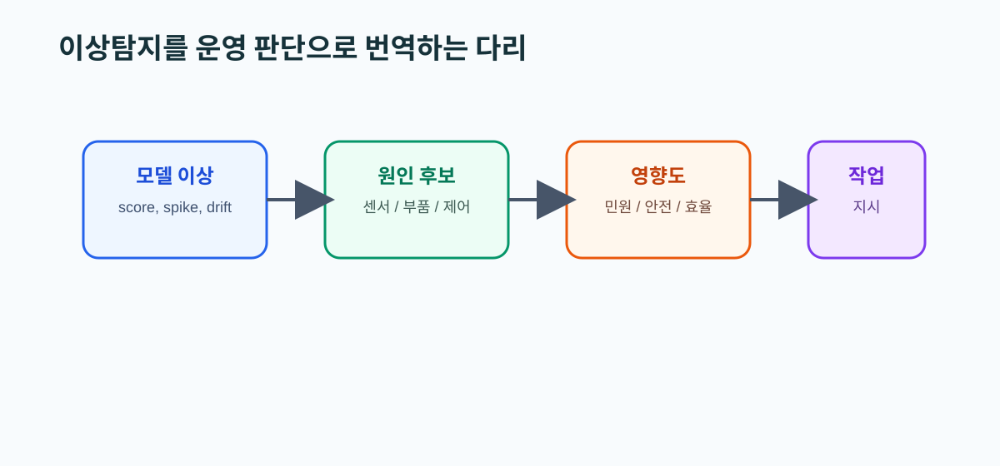

10. Anomaly Detection Review 요약
왜 읽어야 하는가
이상탐지는 HeatGrid의 일부일 뿐 전부가 아니다. 이 문서는 어떤 이상이 의미 있고, 어떤 이상은 현장 맥락이 없으면 가치가 낮아지는지 구분하게 도와준다.
이 문서를 읽고 나면 할 수 있는 것
- 이상탐지가 왜 보조 계층인지 설명할 수 있다.
- 센서 이상과 설비 이상을 다르게 봐야 하는 이유를 말할 수 있다.
- anomaly score를 작업지시로 번역하는 중간 계층이 왜 필요한지 이해할 수 있다.

핵심 개념
- 이상탐지는 정상 패턴을 먼저 잘 알아야 한다.
- 센서 스파이크, 설비 열화, 제어 불안정은 모두 이상일 수 있지만 운영 중요도는 다르다.
- 설명 가능성과 현장 적용성이 모델 성능만큼 중요하다.
실무 예시
센서 스파이크는 모델 입장에서는 큰 이상일 수 있지만, 운영 입장에서는 센서 교정 이슈일 수 있다. 반대로 작은 온도 이탈이 반복되면 실제 민원 전조일 수도 있다.
PreDist 연결 예시
PreDist에서 disturbance와 customer report가 같이 붙는 패턴은 단순 수치 이상보다 운영적으로 더 중요한 학습 사례가 된다.
HeatGrid 적용 포인트
- anomaly score만으로는 부족하고, 원인 후보와 영향도를 함께 해석해야 한다.
- 센서 이상과 설비 이상을 구분하는 후처리 계층이 필요하다.
- 리드타임 예측이 있더라도 우선순위화와 재계획이 따로 있어야 한다.
초심자 체크포인트
- 정상 패턴을 왜 먼저 알아야 하는지 설명할 수 있는가
- 센서 이상과 설비 이상을 같은 경보로 다루면 안 되는 이유를 말할 수 있는가
- HeatGrid에서 이상탐지가 왜 보조 계층인지 이해했는가